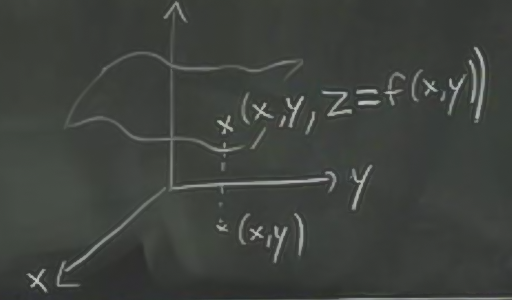
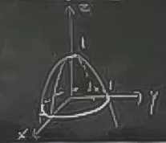
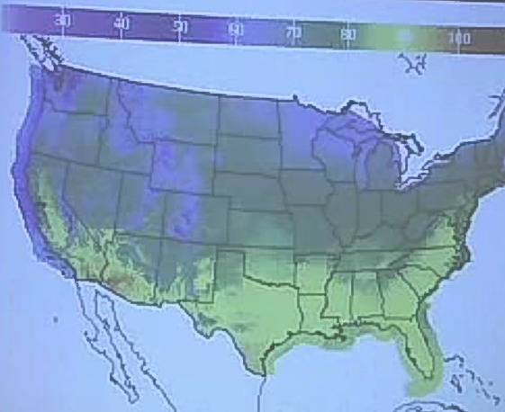
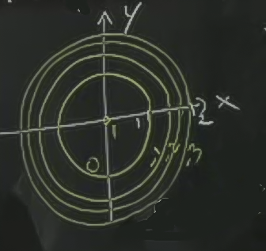
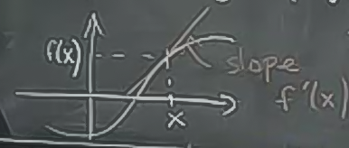
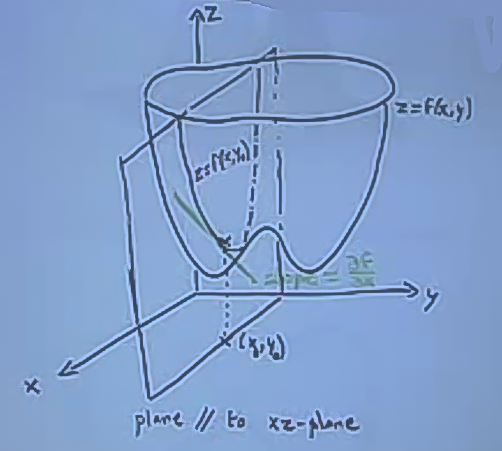
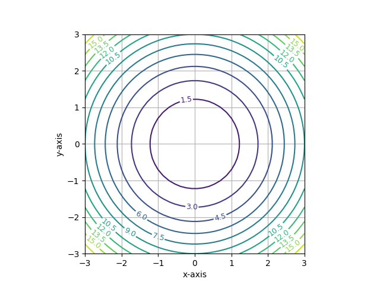

İki değişkenli bir fonksiyonu gösterebilmek (plotting) için

\(x,y\) değerlerine tekabül eden \(f(x,y)\)’yi, z ekseni üzerindeki yükseklik olarak kabul ederiz, ve oraya bir nokta koyarız. Tüm \(x,y\)’ler için bu yapılırsa bir yüzey ortaya çıkar. Dikkat 3 boyutlu bir şekil görülecektir, fakat içi dolu değildir, fonksiyon sadece yüzeydedir.
Örnek
\[ f(x,y) = -y \]
iki değişkenli de olsa illa her iki değişken fonksiyonda kullanılmalı diye bir şart yok. Bu formül bir düzlem tanımlar.
Hoca çizmek için önce yeşil okun gösterdiği çizgiden başladı, ki bu çizgi \(z=-y\), -1 eğimi olan bir çizgi. \(x\) tanımlı olmadığına göre bu çizgi her \(x\) için geçerli olmalı, ve üstteki düzlem ortaya çıkıyor. x-ekseni bu düzlemin içinden geçiyor.
Örnek
\[ f(x,y) = 1-x^2-y^2 \]
Grafiği anlamak için \(yz\) düzleminde neler oluyor onu anlamaya uğraşalım. Sadece \(yz\) düzlemine bakmak demek, \(x=0\) kabul etmek demektir, o zaman geri kalanlar
\[ z = 1-y^2 \]
bir parabolu tanımlar.

Peki \(xz\) düzleminde neler olur?
\[ z = 1- x^2 \]
yine aşağı dönük bir parabol.

\(xy\) düzlemiyle nerede kesişim olur? \(z=0\) ise,
\[ 1-x^2-y^2 = 0 \]
\[ x^2 + y^2 = 1 \]
Bu birim yarıçapı olan bir çemberdir (unit circle).

İlginç bir diğer fonksiyon

Bir at eğerine (saddle) benziyor, \(yz\) düzleminden bakılınca yukarı giden bir parabol \(z=y^2\), ama \(xz\) düzleminde aşağı dönük bir parabol, \(z=-x^2\).
Kontur Grafikleri (Countour Plot)
İki değişkenli fonksiyonları çizmenin bir diğer yolu onun konturlarını çizmektir. Konturlar yeryüzünü resmetmek için kullanılan haritalara benzerler, 3 boyutlu şekillerin yassılaştırılarak, sadece üstten görünüşlerini gösteren grafikleme şekilleridirler.

Bir kontur grafiği üzerindeki çizgilerin her biri, bir yüksekliğe (elevation) tekabül eder. Mesela \(f(x,y)=1\) eşitliği için olan tüm \(x,y\) noktaları üstte en dıştaki kapalı eğridir, \(f=2\), \(f=3\), vs aynı şekilde. Üç boyutlu “normal’’ bir grafikte yükseklik olarak (3. boyut) temsil edilen değerler yassılaştırılarak onların üstten görünüşü resmedilir. Ayrıca bir \(z\)”sabitlenerek’’ ona tekabül eden \(x,y\) grafiklenir (bu sabit değerler çoğunlukla düzenli aralıklarla olacak şekilde seçilir, 1,2,3,4,vs gibi), 3 boyutlu bir resimde tüm \(z\) değerleri grafiklenir. Farklılıklar bunlardır. Konturlar kullanarak 3 boyutlu bir fonksiyonu iki boyutta kısmen temsil edebilmiş oluruz. 3 boyutlu fonksiyon ve \(z=1\) anındaki bir kesit örneği alttadır.

Bu tekniğe “seviye eğrileri (level curve)’’ ismi de verilir. \(z=1\) seviyesinde kesit yapılınca o kesit üzerinde bir eğri oluşur, diğer seviyelerde de kesitler yapılabilir, vs.
Bir topografik harita da aslında bir kontur grafiğidir. Mesela alttaki harita ABD Jeolojik Ölçümler (US Geological Survey) haritalarından biri

Mesela 500 yazan bir çizgi var, bu yüksekliği gösteriyor. Eğer o yükseklikte kalmak istersek, hep o çizgi üzerinde yürüyebilirdik, ve hiç yukarı ya da aşağı gitmemiş olurduk. Eğer çizgiler arasında gidip gelirsek, o zaman yükseklik değişimi yapmış olurduk.
Tabii kontur grafiklerinin illa bir coğrafi yüksekliği temsil etmesi gerekmez. Mesela alttaki grafik ABD haritasında herhangi kaç derece sıcaklık olduğunu bölgesel olarak gösteriyor.

Renkler belli sıcaklıkları temsil ediyorlar, ve renkler arasında bazı sınırlar var. Bu grafik te bir kontur grafiğidir.
Örnek
\[ f(x,y) = -y \]
Konturlar neye benzer?

Konturlar değişik yükseklikleri temsil ediyor, ve üstteki resim için de bu geçerli. Bu grafiğin 3D hali içinde yeşil ok olan en üstten 2. grafik. O grafikte bir düz yokuş var, işte üstteki çizgiler, bu yokuştaki yükseklik farkında tekabül ediyorlar.
Örnek
\[ f(x,y) = 1-x^2-y^2 \]
Bu fonksiyon sıfır ise birim çember olur dedik, yani
\[ x^2+y^2=1 \]
Eger \(f=1\) ise
\[ x^2+y^2=0 \]
Eğer \(f=-1\) ise
\[ x^2+y^2=2 \]
Eğer \(f=-2\) ise
\[ x^2+y^2=3 \]
Grafik şöyle

Seviye eğrilerinin dışa doğru nasıl daha sıklaştığına dikkat çekmek isterim. Bu demektir ki dışa doğru gittikçe yükseklik artışı daha dik hale geliyor, çünkü (yukarı doğru) aynı birim mesafeyi almak için gittikçe daha az mesafe katetmek gerekiyor. Orta kısım neredeyse dümdüz.
Örnek
At eğeri grafiğinin konturları

Kontur grafikleri bize \(x,y\) değişirken neler olduğunu söyler. Mesela değerler azalıyor mu, çoğalıyor mu? Bu tür bir sorunun cevabını kontur grafiği hızlı bir şekilde sağlayabilir.
Mesela şu grafiğe bakalım

Eğer \(x\) \(\uparrow\), \(f(x,y)\) \(\uparrow\)
Eğer \(x\) \(\downarrow\), \(f(x,y)\) \(\downarrow\)
Eğer \(y\) \(\uparrow\), \(f(x,y)\) \(\uparrow\)
Eğer \(y\) \(\downarrow\), \(f(x,y)\) \(\downarrow\)
Bu tür nicelik analiz kontur grafiklerinin çizgilerine bakarak hemen yapılabilir. Ama belki de ben daha detaylı bir analiz istiyorum, mesela bir değişkendeki bir değişimin \(f(x,y)\)’daki değişimi ne kadar etkilediğini detaylı şekilde görmek istiyorum.
Değişim oranlarının hesabı türevlerle yapılır.
Kısmi Türevler (Partial Derivatives)
Tek değişkenli fonksiyonlar, mesela \(f(x)\) gibi, o zaman \(f(x)\)’in türevi bir limit olarak tanımlıdır
\[ f'(x) = \frac{df}{dx} = \lim_{\Delta x \to 0} \frac{f(x+\Delta x) - f(x)}{\Delta x} \]
Grafiksel olarak  \(x\) noktasındaki eğim (slope) \(f'(x)\)’e eşittir.
Yaklaşıksallık Formülü
\[ f(x) \approx f(x_0) + f'(x_0)(x-x_0) \]
Bu formüle daha fazla terim eklesek, ortaya Taylor Formülü çıkardı.
Benzer şeyleri iki değişkenli fonksiyonlar için nasıl yapabiliriz?
Buradaki problem iki değişkenin ikisinin birden değişebileceği. Bu sebeple bize birden fazla türev şekli gerekiyor.
Notasyon
Parçalı türev kıvrık bir “d’’ sembolünü andırır
\[ \frac{\partial f}{\partial x} \]
Bu ibare “sadece \(x\) değişiyor, diğerleri değişmiyor’’ demek. O yüzden bu klasik bir türev değil, kısmı bir türev. Tamamı
\[ \frac{\partial f}{\partial x}(x_0,y_0) = \lim_{\Delta x \to 0} \frac{f(x_o+\Delta x, y_o) - f(x_0,y_0)}{\Delta x} \]
Gördüğümüz gibi \(y\) üzerinde hiçbir değişiklik yapmıyorum. Sadece \(x\)’i değiştirip, bu değişimin fonksiyonun tamamı üzerindeki oranını (rate of change) hesaplıyorum. Aynı şekilde
\[ \frac{\partial f}{\partial y}(x_0,y_0) = \lim_{\Delta y \to 0} \frac{f(x_o, y_o+\Delta y) - f(x_0,y_0)}{\Delta y} \]
Geometriksel olarak

Üstteki \(\partial f / \partial x\). Bir \(x_0,y_0\) noktasına bakıyorum, sonra \(y\)’nin hiç değişmemesi durumunun ortaya çıkaracağı bir düzlem hayal ediyorum. Sonra bu düzlemin \(f\)’ten aldığı “kesiti’’ düşünüyorum, işte bu yansıma bir yeni fonksiyon yaratıyor, ve bu fonksiyona \(x_0,y_0\) noktasında teğet geçen çizginin eğimi (slope), \(\partial f / \partial x\).
Peki bu hesap nasıl yapılır? Bu arada notasyon olarak
\[ \frac{\partial f}{\partial x} = f_x \]
aynı şeyler. Soldaki fizik notasyonu, sağdaki uygulamalı matematik notasyonu [burada hoca uygulamalı matematik, zaten notasyonu değiştirilmiş fizik sadece diye espri yapıyor]. Her neyse, hesap için \(y\) sabit tutulur, \(x\) değişken kalır.
Örnek
\[ f(x,y) = x^3y + y^2 \]
\[ \frac{\partial f}{\partial x} = 3x^2y + 0\]
\[ \frac{\partial f}{\partial y} = x^3 + 2y\]
Örnekler
Python Matplotlib ile kesit seviyeleri çizmek için örnek bir program
x=linspace(-3,3,40)
y=linspace(-3,3,40)
x,y=meshgrid(x,y)
z=sqrt(x**2+y**2)
z=x**2+y**2
cs=contour(x,y,z,15)
grid(True)
axis('scaled')
xlabel('x-axis')
ylabel('y-axis')
clabel(cs,inline=1,fontsize=9)
plt.savefig('levels.png')\(x^2+y^2\) fonksiyonun grafiği alttadır.

Soru 2D-5
\(T = x^2 + 2y^2 + 2z^2\) fonksiyonu her \(x,y,z\) noktasındaki sıcaklığı rapor ediyor.
Cevap
Eş sıcaklık \(T\) fonksiyonun bir sabite eşitlendiğinde elde edilen fonksiyondur, o “şey’’ ne ise, o cisim yüzeyinde sıcaklık hiç değişmeyecektir.
Bu cisim bir ellipsoid, bir ellipsoid bir yumurtaya benzeyen, bir elips’in alıp bir nevi çevrilerek elde edilen bir şekildir. Peki şeklin ellipsoid olduğunu nereden biliyoruz? Çünkü ellipsoid formülü
\[ \frac{x^2}{a^2} + \frac{y^2}{b^2} + \frac{z^2}{c^2} = 1 \]
şeklinde, ve \(x^2 + 2y^2 + 2z^2 = c\) formülünü üstteki forma çevirmek mümkün. İki tarafı \(c\)’ye böleriz,
\[ \frac{x^2}{c} + \frac{2y^2}{c} + \frac{2z^2}{c} = 1 \]
Böylece \(1/a^2 = 1/c\) olur, vs..
Peki bir ellipsoid’i nasıl grafikleriz? Bu noktada sorunun istediğinden daha ileri gidiyoruz.
Grafiklerken, mesela \(x^2 + 2y^2 + 2z^2 = 10\) için diyelim, ilk aklımıza gelebilecek fikir formülü tekrar organize ederek \(z\)’yi yanlız bırakmak, ve \(x,y\) kombinasyonlarını bu fonksiyona geçerek sonuçları grafiklemek.
Buradaki problem \(z\) formülü ortaya bir karekök çıkartacak, ve bu karekök sonucu hem eksi, hem artı olabilir. Daha iyi bir yöntem, kutupsal forma geçmek, böylece hep artı olacak vektör büyüklüğü ve açılar üzerinden bir çizim yapmak [1]. Şu formüle tekrar bakarsak
\[ \underbrace{\frac{x^2}{a^2} + \frac{y^2}{b^2}}_{w^2} + \frac{z^2}{c^2} = 1 \]
bunu
\[ w^2 + \frac{z^2}{c^2} = 1 \]
olarak görelim, burada karelerinin toplamı ‘1’ olan bir şey var.
Bu “şeyler’’ \(\cos\) ve \(\sin\) olabilirler, çünkü \(\cos\) ve \(\sin\) karelerinin toplamı 1 değerini verir.
Eğer
\[ w = \sin \phi \]
\[ \frac{z}{c} = \cos \phi \]
dersek, karelerin toplamı üstteki gibi 1 olur.
Şimdi \(w\)’nin detayına inelim
\[ w^2 = \sin^2\phi = \frac{x^2}{a^2} + \frac{y^2}{b^2} \]
Eşitliğin en sağına bakarsak, yine kareler toplamı görüyoruz. Ama bu sefer karelerin toplamı 1 değil, \(\sin^2\phi\) vermiş. Problem değil, karelerin içine bir \(\sin \phi\) biz sokarsak, o zaman sonuçta istediğimiz bir ekstra \(\sin^2\phi\) kendiliğinden gelecek.
\[ \frac{x}{a} = \sin\phi \cos \theta \]
\[ \frac{y}{b} = \sin\phi \sin\theta \]
O zaman
\[ x = a \sin\phi \sin \theta \]
\[ y = b \sin\phi \cos \theta \]
\[ z = c \cos \phi \]
O zaman grafiklemeyi \(\phi\), \(\theta\) açılarının \(0..\pi\) arasındaki değerlerinin
kombinasyonlarını kullanarak rahatça yapabiliriz. Alttaki kodda
linspace ile bu ayrıksal değerler bulunuyor,
outer ile onların her türlü kombinasyonla çarpımı
alınıyor.
Not: \(w\) ile \(z/c\)’nin aldığı \(\cos, \sin\) değerleri ters şekilde de olabilir, sonuç farketmiyor, yine ellipsoid grafikleniyor.
from __future__ import division
from mpl_toolkits.mplot3d import Axes3D
fig = plt.figure(figsize=plt.figaspect(1)) # Square figure
ax = fig.add_subplot(111, projection='3d')
# Katsayilar a0/c x**2 + a1/c y**2 + a2/c z**2 = 1
coefs = (1, 4, 10)
# Katsayilara tekabul eden caplar
rx, ry, rz = [1/np.sqrt(coef) for coef in coefs]
u = np.linspace(0, 2 * np.pi, 100)
v = np.linspace(0, np.pi, 100)
x = rx * np.outer(np.cos(u), np.sin(v))
y = ry * np.outer(np.sin(u), np.sin(v))
z = rz * np.outer(np.ones_like(u), np.cos(v))
ax.plot_surface(x, y, z, rstride=4, cstride=4, color='b')
max_radius = max(rx, ry, rz)
ax.set_xlim(-max_radius, max_radius)
ax.set_ylim(-max_radius, max_radius)
ax.set_zlim(-max_radius, max_radius)
plt.savefig('ellipsoid.png')Kaynaklar
[1] Thomas, Thomas’ Calculus, 11. Baski